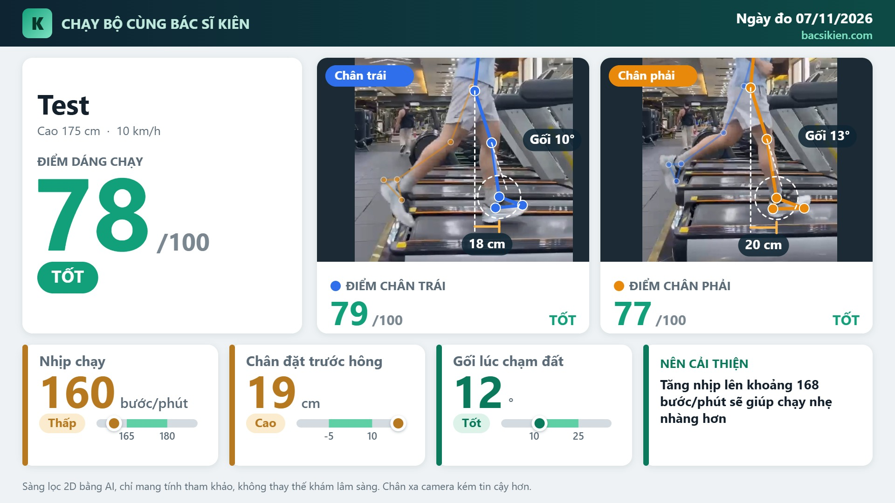

Quy trình 3 bước
1
Đăng ký thông tin
Họ tên, chiều cao (không bắt buộc).
2
Chạy 2 phút
Camera đặt ngang hông, có thể quay thêm góc sau lưng.
3
Nhận báo cáo
Điểm tổng, điểm từng chân, chỉ số chính và khuyến nghị.
App đo những gì
Nhịp chạy
Số bước mỗi phút, nhịp hợp lý giúp giảm lực dồn lên gối.
Chân đặt trước hông
Đặt chân quá xa phía trước dễ "phanh", tăng tải gối.
Góc gối lúc chạm đất
Gối hơi gập giúp hấp thụ lực tốt hơn.
Độ nghiêng thân
Cân bằng trái–phải
Góc sau lưng (nếu quay)
Sụt hông, gối đổ vào trong.
Kết quả mẫu

Gối chạm đất tốt (12°). Nhịp hơi thấp (160 bước/phút), nên tăng lên khoảng 168 bước/phút.

Nhịp hơi thấp (160 bước/phút), chân đặt xa trước hông (30 cm).

Nhịp thấp (150 bước/phút), nên tăng nhịp và giảm bước dài.
Mẫu đầu tiên là một lần đo thật trên máy chạy; hai mẫu sau từ dữ liệu giả lập.
Câu hỏi thường gặp
Có cần gắn cảm biến không?
Không, AI chỉ cần video.
Video có được gửi đi đâu không?
Phân tích ngay trên máy đo; chỉ kết quả được lưu để bác sĩ theo dõi.
Kết quả có chính xác không?
Đây là công cụ sàng lọc, giúp phát hiện dấu hiệu cần chú ý; không thay thế khám và chẩn đoán của bác sĩ.